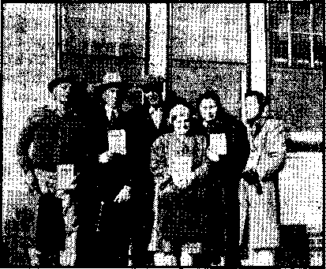
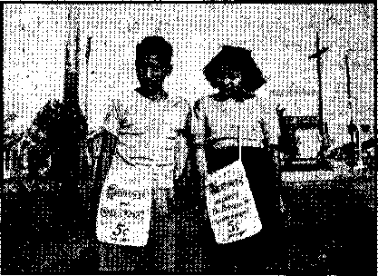
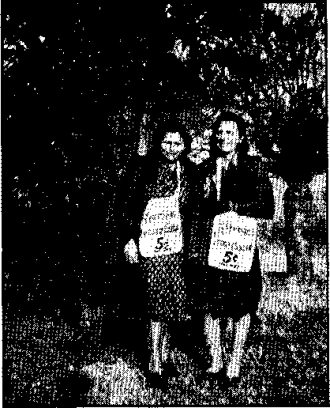

Contents
A Priest Sees the Day of Reckoning
“By Their Fruits Ye Shall Know Them” 9
Children’s Boarding Homes in Los Angeles 10 i Thrown to the Lions
* Present-Day Persecution of Christians
The Mob Spirit Dangerous to Ail
“Thy Word Is Truth”
The New Zealand and Beveridge Plans
Some Indian Witnesses for Jehovah
A Glimpse at Some of Africa’s Wonders
California Boy Outstares a Lion
Presenting “This Gospel of the Kingdom”
Published every other Wednesday by
WATCHTOWER BIBLE AND TRACT SOCIETY, INC*
117 Adama St,, Brooklyn 1, N* T, [I. S. A.
OFFICERS
President N. H. Knorr
Secretary W. E. Van Amburgb
Editor Clayton J. Woodworth
Five Cents a Copy
a year In the United States fl.25 to Canada and all other countrios
NOTICE TO SUBSCRIBERS
Remittances: For yonr own safety, remit by postal or express money order. When coin or currency is lost in the ordinary mails, there is no redress. Remittances from countries other than those named below may bn made to the Brooklyn office, but only by international postal money order.
Receipt of a new or renewal subscription will be acknowledged only when requested. Notice of Expiration la sent with the journal one month before subscription expires. Pl ease renew promptly to avoid loss ot copies. Send chance of address direct to us rather than to the post office. Your request should' reach ns at least two weeks before the date of issue with which it is to take effect. Send your old as well as the new address. Copies will not be forwarded by the post office to your new address unless extra pontaKO is provided by you.
Published also In Greek, Portuguese* Spanish, and Ukrainiain
OFFICES FOR OTHER COUNTRIES
England 34 Craven Terrace, London, W. 2
Australia 7 Beresford Road, 8r.nith(ield, N. S. W. South Africa 623 Boston House, Cape Town
Mexico Calzada de Melchor Ocampo 71, Mexico, O. F, BraaH Caixa Postal 1319, Rio de Janeiro
Argentina Calle Honduras 5646-48, Buenos Aires
Entered as second-class matter at Brooklyn* N. Y.( under the Act of March 3* 1879.
Experiments with Window Shades
♦ Careful experiments with window shades show that if two cloth window shades of light color, preferably white, are pulled down over each window during the hours of darkness in winter, it will save about' 10 percent of the fuel bill; also, if the same two shades are pulled down over each window of a room that is exposed to the summer sun, it will reduce the heat intake by about 65 percent.
Soap Made from Petroleum
♦ The new petroleum soaps are so odorless and tasteless that they can be used to wash vegetables and other foods. They impart mothproof and germ-killing qualities to fabrics, and they wash better in hard water than in soft. It is likely that they will come into general use, because cocoanut oil, hitherto so much used in soap-making, is now so difficult to obtain.
No Contortions in Singing
♦ A good singer must contort her face to reach a high note, but-she does not seem to do so in the new talking movies. First she sings for the record and that is recorded. Then the recording is played back and the artist concentrates on her appearance as she goes through the motions of singing, but actually does not make a noise. The result is better music and a better picture.
Fresh Fruits at Any Time of Year
♦ Tn a short time it will be possible to obtain fresh fruits at any time of year. A wax-like material is used to cover citrus fruits, cantaloupes, watermelons, cucumbers and many vegetables which seals the pores and helps to retain the fresh flavors and vitamins hitherto lost by evaporation. The sealing method is not yet successful on the stone fruits, but chemists are working on the problem.
“And in His name shall the nations hope.”—Matthew 12:21, A.R.V.
Volume XXIV Brooklyn, N. Y., Wednesday, September 1, 1943 Number 62S
Generation of Vipers
WHO are the modern “vipers” Jesus foretold would appear today? For answer look and see who do the deeds which called forth His condemnation in days of yore: “Ye serpents, ye generation of vipers,, how can ye escape the damnation of hell?” (Matthew 23:33) Examination of their modern identity and methods safeguards the road to life, which otherwise is beset with peril. “A word spoken in due season, how good is it!” (Proverbs 15:23) It is those in quest of life who are now bidden, “Give heed.”
A danger, in its degree and extent never equaled in the course of history, now confronts all mankind. That great danger is: Inclusion with God’s enemies in their destruction at Armageddon! From death at the Lord’s hands there is no hope of resurrection. (Deuteronomy 32:39) Religion’s rulers have chosen to oppose God, and therefore may not escape that danger. Like a weight and burden religion has tied the people with foolish restrictions and taboos; and the nations even lie prostrate under religion’s dictators, paralytic in fear of her! The human mind is the bulwark religion has already conquered and shackled with bonds of terror. The freeing of his mind is each victim's only hope.
The truth alone can make men free. “And ye shall know the truth, and the truth shall make you free.” (John 8: 32; Galatians 5:1) Blocking this only avenue of escape to freedom and protection is an active and virulent “generation of vipers”, a brood or progeny of deathdealing serpents, lurking in unsuspected places, posing as friends, yet striking with deadly hatred into the vitals of men seeking refuge. These are the modern “vipers” who follow the ancient Pharisees as example, and of whom the psalmist warned: “Deliver me, 0 Lord, from the evil man:- preserve me from the violent man. They have sharpened their tongues like a serpent; adders’ poison is under their lips. Selah.” (Psalm 140:1,3) The apostle Paul quoted this same text to describe the religionists of his day.—Romans 3:13; Psalm 5:9; and the above Psalm 140.
The Pharisees, to whom the term “generation of vipers” was first applied (Matthew 3:7; 23: 33), were the Scripture-quoting hypocrites of Jesus’ day. “Then spake Jesus to the multitude, and to his disciples, saying, The scribes and the Pharisees sit in Moses’ seat: all therefore whatsoever they bid you observe, that observe and do [because they quoted God’s law, given first to Moses]; but do not ye after their works: for they say, and do not.” Thereafter followed the famous scourging of hypocrisy, which account fills Matthew chapter twenty-three. It thus appears that mere quotation of Scripture is nd proof of righteousness, but may often be done to hide wicked purposes. (See The Watchtower January 1,1943, particularly subtitle “The Touchstone”, and paragraph 37; also The Watchtower February 15, 1943, subtitle “Bowing at the Name”.) Most Bible readers will admit this when it is brought to mind that the Devil himself quoted scripture in order to entrap Jesus, who met those temptations blamelessly. (Matthew 4: 6) The Devil quoted Psalm 91:11,12.
SEPTEMBER 1, 1943
Returning now to the modern manifestation of the “generation of vipers’", the counterparts of the Pharisees, it will be observed that much of the talk on the Bible today is not for the purpose of * understanding God’s Word. On the contrary, it is intended to hide the malicious designs of religious falsifiers of God’s Word, Clearly in fulfilment of prophecy also is the confession of guilt, a dead giveaway, proving they now fill the role of the Pharisees, who likewise testified against themselves, (Matthew 23:31) Several astounding examples are now cited.
■ The religious clergy of the Roman Catholic Church make the boldest claims, both as to authority and right to represent the Lord. They also represent the largest and most influential religious organization upon earth. As expounders of law and wisdom, they fill the modern niche foreshadowed by the Pharisees. Consideration of some of their words and deeds, which are given prominence in press and periodicals, will, it is thought, reveal to the intelligent reader the correspondency to the scribes and Pharisees, streamlined to meet the requirements of a more swiftly moving world. More particularly their use of deception and poisonous words is brought to public attention herein.
. One of the most startling revelations written by a Catholic priest appears, in a condensed form, in The Reader's Digest of May, 1937, entitled “A Priest Warns the Church”. The author, who uses the by-line or pen name “Peter Whiffin”, is said to be “a Catholic missionary ; contributor to Commonweal and Catholic World3’. He begins with the arresting statement: “Recently I, and lots of other priests, have begun to sense a subdued hostility to our clerical collars.” Then he. admits what the Catholic Hierarchy were just then bent on suppressing in the United States, the true status of the Spanish War: "For example, in Spain, monarchy and clergy were practically one for hundreds of years. Now the people, rebelling against the Church, are becoming atheists, disgusted with religion entirely, because the priests, who for them symbolized all religion, betrayed them so cruelly. ...”
Turning then to America he asks:
But, in our own country, has wealth made the Church worldly too? Have we priests been ’ casting our lot more with the ruling powers of Big Business and politics? . , . For answer let’s look at a little story of the Church in America. Typical is the career of a priest in Brooklyn. As a young clergyman he bought, through his bishop, a tract of land inhabited mostly by squatters. For a while his church was a tent. Today he has a magnificent church and rectory, a big school and convent, all practically free from debt. And his personal real estate holdings alone enable him to liye as an independently wealthy gentleman, with a flock of curates to take care of his parish affairs. Just as quickly as this did the Church in America mushroom to enormous proportions, And why not? If Mary Baker Eddy, Aimee Semple McPherson and Billy Sunday could make fortunes in religion, why shouldn’t the Catholic clergy make incomparably more, with the vast organization of the Church behind it? .
But the very suddenness of the Church’s growth to wealth was her undoing. Her clergymen, for the most part used' to poverty, all at once found themselves men of money and importance. Business men cultivated their acquaintance, gave them big loans at reduced rates of interest, advised them about investments. Politicians consulted them about appointments and got thefti all sorts of favors. And soon the poor priests forgot that it was the money of the poor which had made them important, forgot. that big business and politics might be smothering the Church with favors only to make it more difficult for her to cry out against them in their exploitation of the masses.
During these years the clergy preached' pale, scholarly sermons about moral principles of justice, but they did not become imprudently specific about concrete cases of injustice. They railed against sins like birth control, without attacking the economic causes of these sins. They preached mealy-mouthed homilies about how blessed are the poor in being chosen to carry the cross of poverty; of such is the kingdom of heaven—while making sure, as a class, that they themselves had plenty of the kingdom of this world.
In the golden years of Coolidge money poured into the Church’s coffers so rapidly that she didn’t know what to do with it. The clergy got the fever of speculation. . . . . Dioceses began vast building projects. Pastors erected grand rectories with all sorts of luxurious furnishings. Not a few, dying, left to relatives huge fortunes which might well have made the poor gasp, “There goes my five cents and your five cents.” Prelates carried many millions of dollars annually to • Rome, buying for themselves and their favor’’ x ites political preferments and dignities. Cardi-\ nal O’Connell in 1928 was the biggest single taxpayer in all Boston, on his own personal holdings. And the famous Red Train rolled majestically into Chicago, carrying cardinals of the Church to the eucharistic congress put on by Cardinal Mundelein with all the lavishness of a Billy Rose spectacle.
Congregations of priests, nuns, and brothers purchased so much property that in New York State Governor Smith warned Cardinal Hayes that unless their buying stopped, a citizenry already overburdened by tax-exempt Church property might revolt. ...
We were powerful enough to make the politicians consult us, at least in local political affairs, wherever the Catholic vote was strong, as, for instance, in New York, where the Cardinal’s residence [Hayes, deceased, superseded by Spellman] has long been known among politicians by the significant name of the Power House. In fine, we priests were growing richer and stronger every day—and the poor had not yet got wise to us.
The crash should have helped us clear our hearts of the fever of getting money and power. [“For a root of all kinds of evil is SEPTEMBER 1, 1943 the love of money.”—1 Timothy 6:10, Dia-glott.] It might have made us get back to making religion a blessed means of living for the poor instead of a commercialized racket of living off the poor. ... There were, of course, a few charity drives, managed mostly by laymen;. some monastery breadlines, oversubsidized by the laity; and a comparatively infinitesimal trickle of money to the poor from ecclesiastical collections. But as a class we priests did not really sacrifice anything for the poor. . . . Priests were measured by their success as money-getters, and a typical, command from one bishop to his pastors was: “If you can’t get money, I’ll put someone in. your place who can.” One especially inglorious method of making money was by means of the new novena devotiogs to some popular saint, like the Little Flower [Coughlin’s shrine is known as “The Little Flower”], which sprang up suddenly on all sides and in which the piece de resistance [literally, “main dish of a meal,” hence “chief attraction”] was a fragment of dead bone known as a relic. How the faithful flocked to them in droves and left their money behind! . . . [Such as the 4,000 children “blessed” with the “relic of the true crib”, “a piece of wood black with age, taken more than 1,000 years- ago “from the manger in which the Christ child was born’, which was placed on their heads.” (Philadelphia Record, January 2, 1939) Also the Cox Novena of Christmas 1938 in which Priest Cox put “on exhibition a portion of the original crib of the Christ Child”.-—Pittsburgh (Pa.) Post Gazette, December 15, 1938.]
The above expose was written by a very truthful priest. He offers no solution, but clearly envisions “breakers ahead”. The concluding paragraph voices anxiety:
It was to help the poor that most of us became priests. And it sickens us to feel that we have lost touch with them or that they look on us as religious racketeers. But what can we do? The organization of the Church must be run more as a business than a charitable institution, more to make money than to give it away. All that we can do is to coast along and hope that the bottom won’t be reached too soon. And I feel sorry for the yonng men who are now preparing for the priesthood. They’re in for trouble.
The above is not news to everybody, but should open the eyes of some Catholics because coming from a well-known ^clergyman of Catholic faith who could scarcely be accused of misrepresenting the facts. Noting the same commercialism in the Catholic Church just revealed, the Weekly People of December 13,1941, comments upon a statement by Catholic clergyman Hargedon, of Boston, that “our duty ... is to sell Christ and His teachings to our generation”, as follows: “Even when these men speak so-called religiously they use commercial terms, terms of commodities. . . . According to them, Jesus Christ died upon the cross, but they, they are living off it!” Commercialism is offensively prominent in the words of Catholic Monsignor Sheen to Heywood Broun [columnist recently deceased], who had been “converted” to Catholicism two weeks before; “Heywood, you’ve run about a thousand miles now. You’d better come in and let me service you.”—“Catholic Converts,” from The Reader’s Digest, September, 1940.
Monsignor Fulton J. Sheen [“monsignor” means “my lord” in Italian], who “converted” Broun, received a bequest of $68,824 in 1941. The publication PM, issue of January 29; 1941, states that Mrs. Genevieve Brady Macaulay left an estate of $7,559,723, of which she bequeathed $1,705,719 to Catholic organizations, including $68,824 each to “Cardinal Eugenio Pacelli, now Pope Pius XII, and Msgr. Fulton J. Sheen, of the Catholic University, Washington”.
Monsignor Matthew S. Callan died February 13, 1940, leaving an estate of $39,481. Among the assets were over $20,000 in stocks and bonds of business corporations. In April, 1941, the world read the shocking disclosure that four priests in Montreal, Quebec, testified that they were swindled of $50,000 by promoters of a company ostensibly formed to manufacture "hygenic, unsinkable, modest bathing suits”.
The indecent commercialism of religion in Catholic Quebec is reflected in the disclosure, in June of the same year, that four children out of five in that province were below normal due to insufficient food! Said Doctor J. Ernest Sylvestre, the director of nutrition in the Quebec Ministry of Health, at the final session of the thirtieth annual convention of the Canadian Public Health Association: “The majority of the defects found in these children are the direct or indirect result of insufficient or incomplete diet.” It thus appears that while four priests juggled funds in a brazenly commercial venture the children of their parishioners were starving. (Toronto Globe and Mail, June 12, 1941) It is no wonder that the pope, according to the Catholic Herald (December 19, 1941), in answer to the question, said: “Yes, Charity is the weakness of God.” It is not a “weakness” of the Roman Catholic Church! Compare the pope’s words with Psalms 62:11; 29:4.
Clearly exemplary of the clergy’s love of money is the case recorded in Newburyport, Mass. Two priests, John C. Fearns and Daniel J. Cotter, together with assisting lawyers, all of whom were described as a “pack of wolves” by the Newburyport Liberator, were successful in breaking the will of Miss Bridget Crowley, an aged domestic who had piled up an estate of $16,000 during her many years of hard work as a chambermaid at Philips Exeter Academy. The facts were these: Being a “very religious person” Miss Crowley, when stricken with paralysis in 1933, made a will leaving her estate to the two priests above mentioned. Thereafter she moved to the home of Mr. and Mrs. Getchell and was gently cared for by Mrs. Getchell until her death, five years later, in 1939, Confined continually to her bed or chair during that .time, Miss Crowley changed
CONSOLATION her mind about leaving her money to the priests. Grateful for the care which Mrs. Getchell had given her she desired to give her money instead to Mrs. Getchell, and had a will drawn up accordingly, this time by a non-Catholic lawyer. The fact that Mrs. Getchell was a parishioner of the priests did not deter them from waging a legal fight, from which Mrs. Getchell finally withdrew, giving the priests the bulk of the estate. The most scandalous part of this disgraceful affair was that during the five years Miss Crowley was bedridden at the house of the Geteliell’s, and although the priests bragged in their church about what was to be done with her bequest, not once did either visit the paralyzed woman! Compare the words of Jesus: “Provide neither gold, nor silver, nor brass in your purses” (Matthew 10:9); and “lay not up for yourselves treasures upon earth, where moth and rust doth corrupt. . . . But seek ye first the kingdom of God, and his righteousness”. (Matthew 6:19,33) And the words of His apostle James: “For the worship that is pure and holy before God the Father, is this: to visit the fatherless and the widows in their affliction, and that one keep himself unspotted from the world.”-—James 1:27, Murdock’s (Syriac) Translation.
“Yea, the Dogs Are Greedy”
(Isaiah 56:11, A.H.V.)
The Catholic is the “Church” of the great, the wealthy, and the criminal. It is engaged in the bracelet and brandy business—for money. It “blesses” automobiles, animals, and airplanes—-for money. It bestows honors—for money. It was recently announced that the late J. P. Morgan, whose name is a byword for fabulous riches, was made a Knight of St. Gregory the Great by Pius XI,— undoubtedly for money. Others receiving this token of papal esteem were exJudge Martin T. Manton, recently imprisoned for selling “justice” on the federal bench; and Francisco Franco, SEPTEMBER 1, 1943 present dictator over the butchered remnants of the Spain he drenched with Catholic blood; and both of whom gave money or protection to Rome.
Small and great, criminals flock to the confessionals of the “Church” which claims it can intervene with God, “forgive” sin, and save from everlasting fire in “purgatory”, provided the price is right. Some day soon this alleged partnership between priest and the hereafter will be wiped out, together with the whole fakers’ setup, according to Divine Decree: “And your covenant with death shall be disannulled, and your agreement with hell [Hebrew, sheol, grave] shall not stand; when the overflowing scourge shall pass through, then ye shall be trodden down by it.” (Isaiah 28:18) Meanwhile a big business in "forgiving” flourishes; and see who are some of the chief customers. There is the deceased torch singer, Helen Morgan, involved in murder and scandal in North Carolina a few years ago; there is Al Capone; there is Sabbatino, who “was engrossed today in General Sessions [New York City Court] in meditation and prayer”, while witnesses testified as to how he got drunk and killed his best friend (New York World-Telegram, December 1, 1941); Donald Coster, star thief of 1938, born in Italy; and Philip Musica, who took ten million from the MeKesson-Robbins Drug concern, and who posed as a Methodist but had a medal in his pocket inscribed, “I am a Catholic. In case of accident notify a priest.”
, Among others were Dutch “Cardinal” Schultz, gang murderer, who had the torture technique well mastered before he was “liquidated”; and “Knifey” Sawicky, a Dillinger admirer of 19, who was electrocuted for the murder of four men whom he boasted he had killed in four days, as “easy as eating ice-cream cones”; and only a few hours before his execution he received “Holy Communion” from a Catholic priest. (New
York Daily News, January 17, 1942)
Nor are murderers and torturers lacking among the ranks of priests themselves. In Ashland, Ohio, a priest by the name of Rooney stripped and beat a pretty young girl living in his home. The bald facts are that he dragged the young kvoman from her bed before daylight to the church basement, tied her to a post, gagged her with a towel, and beat her. nude body mercilessly. Her own sworn statement related that the priest “did cruelly torture or torment or punish her with a heavy leather strap, while tied with a rope, and gagged with a towel”. (United Press dispatch carried by the Atlanta Constitution, the Newark Star-Ledger, and other newspapers on March 13,1941; but after the priest’s arraignment appears to have been hushed up.)
Consolation has in the past furnished much evidence of the cruelties and abominations done by the Jesuits, an organization which, boasts more than six thousand members in America, who still receive their orders from Italy, and which has the audacity to publish a magazine entitled “America”. The Tidings, Los Angeles, quotes the Civilta Cattolica, organ of the Jesuits in Rome, to the effect that the organization had in 1941 the number of 26,309 members “divided into 50 provinces and viceprovinces throughout the world”. It is well known that the Jesuits compose Rome’s secret service, her espionage army or “gestapo”. What do they do? They act for the Vatican and report to the Vatican.
No more unsavory history can be found than that of the Jesuits. Richard Baxter discloses some pertinent facts • about them in his book Jesuit Juggling. He refers to the whole order as
that bloody hand, that hath already spilled so many streams of Christian blood.. . . When the sword is in their hand, they will soon answer all [protestant] arguments, with a fagot, a hatehet, or a halter.. .. Their inquisition is a school where they dispute more ad-
8
vantageously than in academies... Jesuits are men who know no authority save the command or mandate of the pope, who have no motive of action except personal indulgence, and aggrandizement of their craft; and, lastly, have no permanent residence or abode, but shift from country to country like the sands of a windswept wasteland. . . .
Several popes were Jesuits, and of Pope John XXII the condemnation by his Catholic brethren, at the General Council of Constance, which deposed him, stated:
He came to be pope by causing Pope Alexander and his physician Daniel de Sophia to be poisoned; that he committed incest with his brother’s wife, and with nuns, and whoredoms with virgins, adultery with men’s wives, and other crimes of ineontinency.
Pope John XIII was a ravisher of maidens, and was slain in the act of adultery. Baronins, Catholic historian, says of the popes:
What was the fall of the Holy Roman Church? How exceedingly filthy when most potent, and yet sordid whores did rule at Rome! by whose pleasure sees were changed, prelates were given . . . ; and their lovers or mates were thrust into Peter’s chair. . . . And what of the cardinals, priests, and deacons, think you, . . . those monsters did choose, when nothing is so rooted in nature as for every one to beget his like?—Page 63.
“The witchcraft, poisonings, simony, sodomy, adulteries, and incest of [other popes] are recorded by their own historians.” (Page 69) In the'face of this record Bellarmine, famous Catholic authority, repeats (de Eccles. 1,3. c, 5) the Roman rule: “No man, though he would, can be a subject of Christ, that is not subject to the Pope.” In the interests of this same goal of the papacy, world domination, Hitler and the Axis make war. In behalf of the same objective the Jesuits have engaged in every type of occupation, including the Protestant ministry; appeared in all manner of disguise, fomented war and internal strife, such as our own Civil War. They
CONSOLATION now lead in the combat against Jehovah’s witnesses, the foremost lovers of freedom today!
The above is scarcely brief mention of the crimes of the modern “vipers”, which have accumulated throughout the years. Jehovah has set an end to wickedness. “The end shall he at the time appointed.” (Daniel 11:27,45) But meanwhile the serpent’s spawn lurk in the shadows, beside the road, and in pleasant places, set there to beguile men to their death. (Revelation 12: 12; 20: 2) The weapons employed are not always the knife, the war tank, the bomb, now’ taking countless Jives because of Rome’s greed for wrnrld conquest. Hiding their fangs behind a sanctimonious front, more deaths are caused by deceiving men concerning their Creator, Jehovah. “By the sleight [trick] of men, and cunning craftiness, whereby they lie in w’ait to deceive,” have the clergy’ led many to err from the way’ of life. (Ephesians 4:14; Romans 16:18) But how can the false be surely discerned as the enemies of God?
The modern “vipers” are marked by their hatred of God’s kingdom, The Theocracy. The announcement that the Lord is setting up a Righteous Government, soon to take charge of earth’s affairs, and bringing in a New’ World of joy and blessedness, stirs the fearful malice of Satan, for long the world’s overlord; and he sends forth his brood to poison men against God and against TIis ambassadors or heralds of the New World. “And the dragon [Serpent, Satan, the Devil, see chapter 20, verse >2] w’as wroth wdth the wmman, and went to make war with the remnant of her seed, w’hich keep the commandments of God, and have the testimony of Jesus Christ.” (Revelation 12: 17) AU the forces of evil are angry because they see that soon they shall be dispossessed. (Matthew’ 21:43) It is therefore high time that the refugees to God’s kingdom, that is, SEPTEMBER 1, 1B43 those seeking the Lord’s way’ to life, take note of certain acts perpetrated now in defiance of the Lord, and to the hurt of the people.—Matthew7 7: 20.
Observe then that priests of the organization, covered with guilt and blood, now7 undertake to call Jehovah’s witnesses to account. Some lie in wait near the homes visited by Jehovah’s witnesses. A householder, who has previously welcomed His ministers, receives a sinister caller, either a priest or coworker. First he is given a warning of the 'danger’ of befriending “such people”. If a few lies do not suffice to sow prejudice, then the caller threatens dire consequences to “one so foolish as to even associate with Jehovah’s witnesses”. On the next call by God’s witness the results of the poison may be observed. Where before all wms friendliness, now’ is the cold hostility of suspicion. Perhaps the venom has innoculated the victim more deeply, and he abuses the preacher of the gospel; or it may have suffused him .or her altogether, and he resorts to violence against the King’s brother.—Matthew 25: 45.
Again, the modern “vipers”, with their black and white markings, go about injecting their fangs into a crowd, poisoning their minds against Jehovah’s witnesses who teach on the streets, even as Jesus did. The venom spreads, and soon a bloodthirsty’ mob smashes Americans exercising their right and privilege of w’orshiping the Lord according to the Bible. Bystanders may be deceived too, and are often heard to say: “Those people must be doing something w7rong, or they wmuld not have trouble.” Such are led to ignore Jesus’ prophecy that His true followurs would be persecuted and hated at the instance of modern “vipers”. “Ye serpents, ye generation of vipers, how can y7e escape the damnation of hell? Wherefore, behold, I send unto you prophets, and wise'men, and scribes: and some of them ya shall kill and crucify; and some of them shall ye scourge in your synagogues, and persecute them from city to city.”—Matthew 23:33,34; 24:9.
The venom spreads like a plague ever seeking new victims. Before assemblies of Christians, priests and their cohorts hatch up conspiracies to thwart the meetings. Their adder tongues spread flying reports, stir up the rabble and * gangsters: then sweeps abroad the uncontrollable fire of hatred, kindled by the priestcraft, upon innocent people, thereby bringing untold pain and suffering on men, women, and children, gathered meekly to learn God’s Word,
Surely the attackers must mark the fact that Jehovah’s witnesses stand as firmly as ever, no matter how many mobs wear themselves out in frenzied assault. After they had battered the faces of women and children and wrecked property, as in Little Rock and Klamath Falls, that did not stop Gbd’s message. But they do bring destruction upon themselves. Men led to attack Christians are led to their death. According to Divine law those acting upon or making false charges are adjudged guilty themselves of the' crime falsely laid to another. (Deuteronomy 19:18,19) The time to settle accounts is here. Inclusion with God’s enemies means destruction with them at Armageddon.—Psalm 145: 20.
Jesus’ words concerning the "vipers” of religion therefore constitute a warning to Kingdom seekers. He further points out that it is the intent and purpose of these vicious-clergy to prevent any man from gaining life in the Kingdom. "But woe unto you, scribes and Pharisees, hypocrites! for ye shut up the kingdom of heaven against men: for ye neither go in yourselves, neither suffer ye them that are entering to go in.”—Matthew 23:13.
Forearmed, then, let the upright who desire God’s approval and protection now walk forearmed against the poisonmongers of religion. When the skirted adders would poison your mind against 10
Jehovah’s ordained (servants, request proof of the false charge. Since you may be sure that God’s enemy is not moved by desire to help you; insist on ' a reason for the unwelcome interest in your affairs. 'Rely on the Lord and stand your ground against men or devils, like Americans who remember Valley Forge! It is your life at stake, so do not give it up at the whim of venomous reptiles who deal in deception and death. Brush aside suspicion, remove distrust, and rely on God, the Invincible, to bring forth a world without a flaw.—Revelation 21:5.
Children’s Boarding Homes
in Los Angeles
♦ Some children’s boarding homes in Los Angeles are not all that could be desired, according to the Los Angeles Times, May 28, 1942. In one place the children were "whipped unmercifully”; in another place four or five children were bathed in a single tub at a time, once a week; in another, 17 children slept in one room; another was so filthy that it was nauseating; and in another the children were treated to scenes of young men coming and going to visit the young women in thin clothing that entertained them. State Senator Jesse M. Mayo described this situation as worse than the war; men and women shuddered at the repetitions of testimony showing the horrible conditions, and finally the hearings were suspended as being too sickening for the state senators to endure. This will probably lead to something’s being done for these unfortunate little folks.
Don’t Take Yourself Too Seriously
♦ Don’t take yourself too seriously. It might give you heart disease. The Census Bureau claims that during the last forty years the death rate from heart disease has more than doubled, although the rate of deaths among persons less than 35 years of age attributed to heart disease fell off.
CONSOLATION
IN PAGAN Rome Christians were hurled to the floor of the lions’ pit to be devoured. In the United States of America, land of the free and home of the brave, Christians have been thrown to the “lions”, mobs of beastly men, to be devoured by violence.
It was because of their refusal to break integrity toward Almighty God that followers of Christ in ancient Rome were torn asunder by the lions while the rulers looked on with delight. The fiendish practice was regarded as great sport and entertainment by the popular majorities who, with their religious allies, gathered about the arenas in great crowds to see the roaring beasts tear the Christians limb from limb.
Today in the United States faithful servants of Almighty God, Christians known as Jehovah’s witnesses, have, in numerous instances, been abandoned and turned over by public officials to wild, demonized, violent, beastly crowds. Vicious mobs of tyrannical men have been allowed to roam the nation seeking whom they might devour. Sincere Christians have suffered great injury and damage to person, family and property in thousands of communities of the land. Officials, sworn to protect the people and uphold the law, have looked on, nodding their heads with approval.
The persecution of Jehovah’s witnesses and the injury inflicted upon them is not because of any wrongdoing on their part, but they have in every instance been attacked because they preach the gospel in the way the apostles of Jesus did and because they refuse to discontinue when ordered to do so by the mobsters. The chief excuse used by the attackers is that Jehovah’s witnesses do not salute the American flag, and this excuse is employed in spite of the fact that it is well known that Jehovah’s witnesses respect the flag but are commanded by Jehovah God in His law set forth in the Bible, at Exodus 20: 3-5, not SEPTEMBER 1, 1943
to salute any image or symbol of any thing, man or government, on earth or in heaven. They have a constitutional and God-given right to decline to salute, and should be protected in that right as are the Quakers, who refuse to salute the government by removing the hat in court or in the presence of the king.
Beginning in June, 1940, a nation-wide campaign of newspaper publicity, burning and scorching Jehovah’s witnesses, was launched by their enemies, making many false charges to incite hatred. These misrepresentations inflamed the lawless ones like a match applied to a field of dried grass. Groups of -wild men in many parts of the nation descended upon congregations or assemblies of Christians at worship and studying the Word of God. They attacked and assaulted those in attendance, and, in some instances, burned the halls to the ground, and, in others, wrecked the buildings and destroyed chairs, benches, desks, pictures, and other equipment. The homes of Jehovah’s witnesses were stormed and members of families torn from pleading relatives and dragged through public streets to be hanged. Many have been forcibly and violently taken from homes and carried or deported into other states. They, their friends and attorneys have been mobbed and brutally beaten and severely injured while attending trials of false charges placed against them. . The demonized mobs overran many communities unhindered by the duly elected peace officers. Property w*as destroyed, cars and trucks overturned, telephone lines cut, bonfires of Bible literature made in public streets. Children were stoned, their teeth knocked out and noses broken. Christian women were foully cursed, brutally beaten and then robbed. Ministers of the gospel were feloniously assaulted, clubbed, slugged with blackjacks, knifed and shot, 11 and such victims left lying bleeding and unconscious in blood-soaked clothing. Bruised and beaten bodies of such Christians were cast off the road to lie for hours unattended, indeed left for dead.
It can be authoritatively stated that, since 1940, the public records of the t Department of Justice reflect a contin* uous record of similar acts of violence and persecution of Jehovah’s witnesses. This ugly picture cannot be presented in every horrifying detail, because that would require volumes. However, a few of the more recent instances of misconduct of police officers and mobsters can be given here.
The United States Department of Justice has found that these numerous assaults upon Jehovah’s witnesses in widely separated parts of the land are planned and prosecuted on a nation-wide scale. It is now well established that the un-American members of the American Legion and the local representatives of the foreign Roman Catholic Hierarchy with headquarters in Vatican City, Fascist Italy, have been instrumental in the perpetration of thesp dastardly and criminal acts. It is plain to Jehovah’s witnesses that these assaults originate with the unseen demons and Satan the Devil, who is invisible to human eyes, the god of this evil world that controls such debased human agencies. Witness the assaults against the September, 1942, assembly of Jehovah’s witnesses in Arkansas, Oregon and Illinois at the same time. This is further proved by the fact that within a two-week period of December, 1942, in three widely separated places, to wit, Little Rock, Ark., Redondo Beach, Calif., and Winnsboro, Texas, similar assaults were made against Jehovah’s witnesses.
The mob violence against Jehovah’s witnesses broke out in 1940 in Del Rio, Texas, and quickly swept the nation. The fires of violence against God’s faithful servants have continued to burn in that state ever since. In December, 1942, at Winnsboro, Texas, the agents of Satan 12 tried apparently to wipe out all Christian ministers of that city. An attempt was made upon the lives of Robert Coffer, the company servant, local representative of Jehovah’s witnesses, and Oscar L. Pillars, a traveling minister supervising the activities of Jehovah’s witnesses in that area.
One C. C. Phillips, a local clergyman of a recognized religious denomination, seeing his pastures spoiled by the truth preached by Christians such as Pillars and Coffer and other of Jehovah’s witnesses, falsely represented to the ’men of a baser sort’ in the community (Acts 17:5) that Coffer and Pillars were against the flag and the government. A violent, turbulent mob was planned and gathered speedily. Coffer was hunted down and clubbed on the head because he would not quit preaching in the town. He escaped death only through the miraculous protection of the Lord.
■ The mob was not satisfied with the blood drawn from the body of this victim. While Coffer was being drawn and torn asunder, “Reverend” C. C. Phillips arranged with the captain of the Civilian Defense, the city marshal and the Wood county constable to arrest and hold Oscar L. Pillars until the mob could finish its job with Coffer and arrive at the jail to take care of Pillars.
- Outside the city hall the mob waited. The city marshal, acting in conspiracy with the mob, promised protection and deliverance if Pillars would agree to violate his conscience by saluting the flag and break his covenant with God by promising not to preach the gospel. When this faithful servant of Jehovah, guilty of no crime or wrongdoing, refused to comply with the marshal’s request and advised him that he would not break his faith with his Creator, Jehovah God, by saluting the flag, the “peace” officer immediately turned him over to the angry mob in waiting.
Pillars was beaten and stomped by the
CONSOLATION mob, then .dragged unconscious to a water hydrant and revived with cold water. When he regained consciousness he was beaten again and, with a rope tied around his neck, violently dragged through the streets of the town back to the city hall and hanged to a post. While hanging by neck the rope broke and he lay unconscious on the ground. After lying in jail six hours in a dazed and helpless state, he was taken by the county attorney to a hospital at Pittsburg, Texas. He was later released without charge being laid against him and spent many weeks recuperating from the almost deadly injuries inflicted.
Concerning this experience Mr. Pillars wrote: “Might I say that Jehovah’s hand certainly is not short and that His protection was so manifested in this case that no one could even doubt His presence. I thank Him that I have had the privilege of suffering some for His name’s sake.”
About December 1, 1942, Clarence Bradley, colored, an ordained minister of Jehovah God, preaching in the apostolic way from house to house in North Little Rock, Ark., was picked up by the local police and held “for investigation”. The “investigation” proceeded in Nazi fashion, the officials using the. gestapo methods in keeping with the reputation of the city which has gained the alias “Little Reich”. The police desk sergeant sneered at Bradley: “One of these guys that won’t salute the flag”; to which one of the arresting officers “bravely” added: “Yes, but he is going to salute this flag' before he leaves here.” Then the officers proceeded to administer a vicious beating because of his refusal to salute. The officers jumped violently upon this Christian minister and struck him over the head with blackjacks until he lay motionless and unconscious on the floor of the police station. He was then thrown bodily into the “bull pen" of the local jail.
SEPTEMBER 1, 1943
About midnight the witness regained consciousness. Immediately he was brought again before the desk sergeant and ordered again to salute the flag. Refusing, he was clubbed back into unconsciousness. He was denied much-needed and requested medical attention. He was suffering from hemorrhages of blood into his mouth and with blood flowing from the wounds received about his head. He was denied the right to use the telephone to communicate with friends or relatives.
At midnight two days later he was released and driven into the dark streets of the town with the warning never to set foot in the city again and to stop preaching from house to house. He slowly walked home in blood-soaked clothes. He attempted to obtain medical attention, but a doctor refused even to examine him because of fear of the demonized “officers of the law”. Finally he was admitted to a clinic for an examination and was told that he had a severe brain and head injury of a permanent nature. Blood continued to drain from his head and hemorrhages were constant. This is the price that was required to be paid to these criminal officials of that Nazi-inspired city by a* Christian following in the footsteps of the apostles who advised similar officials : “We ought to obey God rather than men.”
It is plain that demon-controlled men are not the rulers of their own minds although they may be conferred legal authority to rule over the people. They are directly controlled by the evil angels that have allied themselves with the Devil. The statement of Police Sergeant Charles Ellis of Redondo Beach, Calif., proves the above statement. He explained his inhuman treatment of one of Jehovah’s witnesses by saying, “I simply lost my head,” but this excuse did not save him from paying the penalty for his assault and' mistreatment of' August Schmidt, one of Jehovah’s witnesses, on December 5, 1942.
13
On the day before, August Schmidt and wife had been preaching the gospel publicly in the city. of Redondo Beach _ by public distribution of the Watchtower ' and Consolation magazines. While thus engaged several mobsters attempted to assault him upon his refusal to discon-1 tinue preaching as demanded. His wife called the police. The police took the mobsters as well as the minister and wife to the police station. There Sergeant Ellis and the chief of police expressed their hatred of Jehovah’s witnesses and of the preaching work done by Schmidt. The officers refused to arrest the mobsters; and attempted to hold Schmidt and wife in custody, but, finding no law with which to charge them, they were forced to release them.
While calling from house to house on December 5, 1942, ministering to the spiritual needs of people of good-will toward Almighty God, Schmidt learned that he was in the neighborhood where Sergeant Ellis lived. Knowing that Ellis hated the truth and the gospel message, Schmidt attempted to learn the location of the Ellis house so that he could avoid it. Unfortunately he unintentionally called at the home. of Ellis. When he learned that Ellis lived at the place he politely excused himself and withdrew. There was no offense and nothing improper was said at the Ellis home. The "crime” was in accidentally calling at the Ellis home.
Sergeant Ellis became enraged, and his anger increased throughout the day until he was impelled to do something about it. Ellis learned where Schmidt lived and called at the Schmidt home. Schmidt answered the door and officer Ellis immediately seized hold of him and pulled him violently from the porch of his home, dragging him to his private car and making him enter at the point of a gun. The “brave officer” threatened to shoot the wife or any member of the family or friend if anyone tried to interfere with his unlawful conduct.
In the car the officer immediately began beating Schmidt, inflicting hard, deadly blowrs with a blackjack. Finally the tortured and beaten man was brought to the police station. Injured to the point of incapacity, he could not w’alk fast enough to satisfy the officer as they went from the car to the station. Officer Ellis pushed and kicked him, yelling “Faster I Faster!” and continued to strike him over the head with the blackjack. When Schmidt got inside the police station before the desk sergeant, Ellis continued to brutally assault and beat Schmidt with the blackjack. So terrible was the assault that the desk sergeant remonstrated with Ellis and said, “Why don’t you quit? You’ve done enough.” This only infuriated Ellis to intensification of the assault.
Finally Mrs. Schmidt arrived at the station. She discovered her husband with a gash over the left eye and with blood streaming down his swollen and bruised face. His shirt and trousers were soaked with blood from his body. The doctor was called to administer first-aid treatment. Other police officers who saw the victim later were amazed and astonished at the terrible injuries inflicted upon him.
When he saw that he was unable to knock Schmidt down or render him unconscious, officer Ellis threw his badge and gun on the counter and yelled as he left, “Tell the chief that if he doesn’t like what I did, he can get another man!” For this cruel and inhuman conduct the officer was not discharged nor condemned, though he had flagrantly violated the penal statutes of the state. On or about December 10, 1942, the chief of police showed his approval of Ellis by declaring him to be “one of his most capable and efficient police officers”. (According to the South Bay Daily Breese, Redondo Beach newspaper, of December 10, 1942.)
The Los Angeles County grand jury did not share the view of the chief of police. Ellis was indicted on two felony counts. Agents of some foreign power in favor of moh action threw their resources into the defense of the criminal. High-powered and high-priced attorneys were employed, who defended the ease, appealing to religious and political prejudice. A Catholic priest attending the trial and giving strong “moral” sup-. port to the defense of Ellis was overheard to say in broken English with an Italian accent, “Ellis will easily win an acquittal.”
The deputy district attorney, George H. Johnson, overcame the “patriotic” arguments of defense counsel by winding up his argument thus: “Patriotism is the last refuge of a coward.” The jury returned a prompt verdict of “guilty” against Ellis, thus condemning his unAmerican conduct, vindicating the name of Schmidt, one of Jehovah’s witnesses, as an American citizen. The case furnished good local color in the setting for the delivery by the president of the Watchtower Bible & Tract Society before thousands assembled at Los Angeles of the inspiring speech “Fighting for Liberty on the Home Front”.
To mob a criminal guilty of heinous crime is bad, but to subject an innocent person to such treatment is a worse crime. It is the worst of all crimes to mob or condone the mobbing of a Christian minister because he declines to stop exercising his God-given constitutional right of preaching the gospel. Mob violence as a means of punishment has ever been condemned in an ordered society where there are laws to enforce the doing of that which is right and the prohibiting of that which is wrong. A nation in which mob violence is permitted to overrule the laws and constitution is brought into disgrace. Officials and nations that allow mob rule are an abomination in the sight of Almighty God.'
SEPTEMBER 1, 1»+3
The ordered administration of justice free of fear and equal to all men regardless of station in life, creed or color is an essential supporting pillar of the democratic system of government. When the administration of the judicial functions of the government are turned over to wild, demonized, beastly men of violence, a breakdown of the system of government begins to take place. The very foundation of government is impaired. The people lose respect for the governors and government that permit such crimes or allows them to go unpunished.
To allow mobsters to assault Jehovah’s witnesses because they are an unpopular minority does not strengthen the confidence of the people. If such injustice can be committed against a small minority, then it can be perpetrated against anyone and the safety of all will become imperiled. All beginnings of encroachments on minority rights should be resisted. To permit it to exist without prosecution or interference because carried on by influential groups imperils the government itself. Allowance of such conditions is an invitation to anarchy and the overthrow of the government itself at the hands of mobs.
There are federal statutes in the United States Code which provide for penal punishment of mobsters and of public officials who conspire together to deprive persons of rights through mob violence. Out of the many thousands of cases of violations of these statutes by mobsters who have assaulted Jehovah’s witnesses in recent years the Department of Justice has found courage enough to prosecute and convict but one. The conviction was speedy. The judgment was promptly affirmed on appeal. This should be a token to the Department to take similar action in hundreds of other cases in every state where mob violence has prevailed, so that the confidence of the people in the government and its justice can be restored.
15
The failure to prosecute such offenders does not imperil Jehovah’s witnesses. Their work will be done. But to allow such intolerable conditions in America -imperils the sovereign people of the United States for the protection of whom the government of the United - States was established under the Con-* stitution. Jehovah’s witnesses have, by the grace and strength of Almighty God and His Son Christ Jesus, remained and stood firm in their work of preaching the gospel through the flood of mob violence. “Jehovah will give strength unto his people.” (Psalm 29: 11, A.R. V.) Jehovah’s witnesses push on in the fight rejoicing in this counsel to them from Jehovah God: “Have not I commanded thee? Be strong and of a good courage; be not afraid, neither he thou dismayed: for the Lord thy God is with thee whithersoever thou goest.” (Joshua 1:9) He promises that He will be for “strength to them that turn the battle to the gate”, and He is. (Isaiah 28:6) His faithful servants have not been awed or overcome by sight of the overwhelming odds of the majority power exercised by the cowardly mobs. They have continued preaching the gospel in spite of the bluffs and violence of such beastly crowds, and Jehovah has given the victory and turned the tables on the enemy, who now flees in defeat.
The pitching of Daniel to the lions did not stop his mouth from praying to and praising Almighty God. But the mouths of the lions in the den where such faithful servant was thrown were closed by Jehovah. (Daniel 6:16-23) The faith and confidence of Daniel saved him; so also has it saved Jehovah’s witnesses today. (Hebrews 11: 33) God has granted them liberty of action. Those who have refused to take affirmative action to preach the gospel against all odds are quickly losing all liberty.
The opposers of Jehovah’s witnesses should learn that killing creatures serv-16 ing the Lord does not stop the preaching of the gospel. Christ Jesus was hung on a tree. That did not stop the preaching of the Kingdom, but greatly increased the activity of TTis apostles. His apostles were persecuted, stoned, mobbed, arrested and murdered because they preached the truth from house to house, but that did not interfere with the increase of those of good-will who followed in their ■ footsteps. From time immemorial the true servants of Almighty God have been mobbed by vicious agents of Satan. Christ forewarned that the witnesses for Jehovah’s kingdom would be hated of all nations, but He also declared that the message of the Kingdom would nevertheless be preached in all the ■world as a witness unto all nations. The persecution in all nations is strong evidence that the gospel is being preached in all nations by the victims. The religionists are not persecuted in any nation and do not preach the Kingdom gospel at all in any nation.
The unlimited course of vicious and unrestrained brutality finds its counterpart in the days of Noah when the gigantic organization of bullies [nephilim] ‘filled the earth with violence’. (Genesis 6:4-7; Matthew 24:37-39) Satan knows that his time is short. He is attempting to drive all mankind into his camp and turn all against Jehovah God so that all will die with him at Armageddon to cast blasphemy upon the name of Jehovah God. Christ Jesus warned that when these conditions are seen in the earth it should be taken by all men of good-will toward God as certain evidence that they should flge to God’s kingdom, described in the Bible as the New World Government. Christ Jesus is the King of .this new world and is described as the Prince of Peace. (Isaiah 9 : 6, 7) “He shall have dominion also from sea to sea, and from the river unto the ends of the earth.” (Psalm 72:3,7,8) That kingdom shall rule upon the earth and bring everlasting life and happiness to all who are of good-will toward Almighty God.
CONSOLATION
StTsyWORJ) ■ isTruth”
- John 17; 17
WHAT becomes of the soul at death?
Can it detach itself from the fleshly body and continue to exist in a spirit world? God’s Word says: “Behold all souls are mine: as the soul of the father, so also the soul of the son is mine: the soul that sinneth, the same shall die. And when the wicked turneth himself away from his wickedness, which he hath wrought, and doeth judgment, and justice: he shall save his soul alive.” (Ezechiel 18:4,27, Bouay Version) At the pouring out of God’s wrath, it is written prophetically, “every living soul died in the sea.” (Revelation 16: 3) “He made a way to his anger; he spared not their soul from death, but gave their life over to the pestilence.” (Psalm 78:50) “None can keep alive his own soul.”—Psalm 22:29.
When Samson was about to pull down the temple of religion upon the Philistines, he did not pray to God to take his soul to heaven; the record at Judges 16:30 reads: “And Samson said, Let my soul die with the Philistines” (marginal reading; also Rotherham’s translation).
In the Garden of Gethsemane, shortly ' before Ills betrayal by Judas, Jesus said to Ilis disciples: “My soul is exceeding sorrowful, even unto death.” (Matthew’ 26: 38) The prophet Isaiah foretold Jesus’ death between two thieves, saying: “He hath poured out his soul unto death: and he was numbered with the transgressors; and he bare the sin of many, and made intercession for the transgressors.”—Isaiah 53:12. .
Further supporting the truth that the human soul is subject to death, Psalm 33: 19 reads: “To deliver their soul from September 1,1943 death, and to keep them alive in famine.” Also Psalm 56:13: “For thou hast delivered my soul from death: wilt not thou deliver my feet from falling, that I may wmlk before God in the light of the living?" Psalm 66: 9 speaks of God: “Which holdeth our soul in life, and suffereth not our feet to be moved.” Psalm 116: 8: “For thou hast delivered my soul from death, mine eyes from tears, and my feet from falling.” That the human soul dies unless sustained by God’s provision is further proved, at Psalm 119:175: “Let my soul live, and it shall praise thee; and let thy judgments help me.” Isaiah 55:3: “Incline your ear, and come unto me: hear, and your soul shall live.” Jeremiah 38: 16,17:’ “As the Lord liveth, that made us this soul, ... If thou wilt assuredly go forth unto the king of Babylon’s princes, then thy soul shall live.”
That the human soul can be destroyed is proved in the record at Joshua 10:28-39: “The king thereof he utterly destroyed, them, and all the souls that were therein ...”
That it is an insult to Jehovah God for religionists to say that Almighty God, w’ith whom “nothing shall be impossible”, cannot destroy and annihilate the human soul, is proved by Jesus.’ authoritative words, at Matthew 10: 28: “And be not afraid of them that kill the body, but are not able to kill the soul: but rather fear him who is able to destroy both soul and body in Gehenna.” (Am. Rev, Ver., margin) Men may kill the body of God’s faithful servants and stop their present activities in the flesh, but such wicked men cannot destroy the right of such servants to eternal life through Christ Jesus nor their entrance into such life by a resurrection from the dead. But God can both kill the present life in the body and also cancel the right to future life and therefore withhold from the unfaithful and wicked any resurrection from the dead for all time.
All future life of the redeemed dead is based, not upon so-called “immortality 17
of the human soul” as taught by heathen philosophers and religionists, but solely upon the ransom sacrifice of Christ , Jesus and His kingdom and the resur-. reetion. Jesus so states, and also shows the location of those dead up until His return and kingdom. “Marvel not at this: ■ for the hour cometh, in which all that * are in the tombs [the graves'] shall hear his voice, and shall conic forth; they that have done good, unto the resurrection of life; and they that have done evil, unto the resurrection of judgment.” (John 5: 28, 29, Am. Rev. Ver.) The phrase “all that are in the tombs [or graves]” does not include the wicked who are in “Gehenna”. The word “tombs” or “graves” here translates the Greek word meaning “memorial”, and therefore refers to those who come under the redemptive power of Christ’s sacrifice and whom God therefore retains in His memory. Because such dead are unconscious in the graves but are in line for an awakening from death during Christ’s reign, the Bible speaks of them as “asleep”. This is further strong evidence that the dead are dead and not experiencing either pdin or pleasure.
Showing God's knowledge and memory of those sleeping in “hell” or the death state, David, who typified Christ Jesus, said: “If I ascend up into heaven, thou art there: if I make my bed in hell, behold, thou art there.” (Psalm 139:8) God’s power by Christ Jesus reaches down to those in “hell” to raise them in due time to life. When Jesus went to raise the daughter of Jairus, who had died, He said to the mourners round about the house: "Why make ye this ado, ■ and weep? the damsel is not dead, but sleepeth.” (Mark 5:22-43) He raised to life the son of the widow of Nain as the remains were being carried to the place of burial. (Luke 7: 11-15) Following the mortal sickness of His friend Lazarus, Jesus said to His disciples: “Our friend Lazarus sleepeth; but I go that I may awake him out of sleep.” “Howbeit Jesus spake of his death: but they thought that . 18
he had spoken of taking of rest in sleep. Then said Jesus unto them plainly, Lazarus is dead.”—John 11:11-14.
In the foregoing three eases those persons knew’ or felt nothing in death. On being restored to life they gave no account of having been in heaven or “purgatory” or “limbo” or an “inferno of torment”. Such was true also of Jesus himself in death. ‘But now is Christ risen from the dead, and become the first-fruits of them that sleep.’ (1 Corinthians 15:20, A.R.V.) Were it not that Christ has been resurrected to life immortal, says the apostle, “then they also which are fallen asleep in Christ areperished.” —Verses 16-18.
Jehovah gave His Son to be King and righteous invisible overlord of the “world to come”, which shall be completely holy and righteous. The Lord God also gave His Son to be the ransom sacrifice in behalf of all those who believe in Him as God’s provision for salvation and who then obey His commandments and who shall gain life in that new and righteous world. rlhose not believing on and obeying Christ Jesus the Son of God must perish. That is a direct contradiction of the heathenish doctrine of the “immortality of all souls”, including the chief of the demons, Satan the Devil, himself.—John 3: 16.
Jesus assured the dying thief that He would remember him and that then in Paradise on earth the thief would be put on judgment and under a test of his integrity to determine whether he would be “with me”, that is, in favor of and immovably on the side of the King Christ Jesus.—Luke 23: 42, 43.
That Kingdom time is the period of regeneration, mentioned by Jesus at Matthew’ 19: 28. During that time those who devote themselves to Jehovah and His King and who obey the Theocratic rule of righteousness shall be regenerated unto life. Continuing faithful, they shall be granted the right to everlasting life on earth under the heavenly Theocracy, the “new heavens”. .
CONSOLATION
THERE are many fine things about a civilization in which, in time of need, every citizen can be certain of care in a hospital; in which, outside of a hospital, when he needs medical treatment he can be certain of it, whether he has any money or hasn’t; in which, when the doctor prescribes it, he can get the medicine that he needs; in which women, in maternity, can get the free care and the consultation to which all humanity acknowledges they are entitled; in which there are free medical services to all as needed; in which there are superannuation payments to every man and woman who reaches the age of 65; in which there are old-age pensions to persons 60 years of age and older; in which there are certain cash payments to those who have small incomes and many children; in which there are benefits to widows, to orphans, to invalids, to disabled miners, to those that are sick, and to those that are unemployed. Also, it would be nice for every school child to be sure of a half pint of milk every day; to have an apple every day in the apple season; and also, every three months, to have its teeth examined and treated free of charge.
Now that isn’t Paradise that you are reading about; it is just New Zealand. Much of this program has been in effect for many years. All of it has been in effect since April, 1939. The Labor government of New Zealand, which put this plan in operation; does not consider this to be Socialism (a word that a generation ago seared the big financiers out of their boots), but they think it is just common sense that everybody should have a feeling of social security. Does that seem to you to be unreasonable?
Of course, this program requires regimentation, and the opportunity for all to participate in the benefits carries with it an arrangement whereby all persons SEPTEMBER 1, 1943
16 years of age or more are required to be registered and to pay the registration fee and a charge on salaries, wages and other income. In other words, the government wants to know everything about your private business, and you must go along -with the program whether you like it or not. Regimentation everywhere is the order of the day.
In the year 1942 the foregoing program cost New Zealand $73,500,000'; but there were collections on the system amounting to $55,000,000; so it was necessary for the taxpayers to put up only $18,500,000 to give the whole country a feeling that they had some personal interest in their government. Surely this was better than to have some millions unemployed, badly housed, miserably fed, and almost hopeless of . better conditions. Such conditions prevailed elsewhere at the very time that the big financiers were shouting that New Zealand was going to be ruined by its liberality. This was at the time when the same crowd was sending all America’s scrap iron to Japan (even in fast passenger boats) so as to make sure that . when the anticipated war came New Zealand would be ready for what was cooking.
When there are many youngsters in a family, the extra cost weekly is not so much per child, only $1.50; but, in a family where there are many little folks around, $1.50 for each of them is a rather nice thing to have on hand. If there were 15 children in your father’s family, you would have no difficulty in understanding this point. And there is no reproach for this in New Zealand, because every citizen stands on the same level.-
There is nothing miserly about the maternity benefits. A nurse is provided for 28 days, 2 weeks before and 2 weeks after the little folks arrive. For this service the .state pays the nurse $55.50.
19
The doctors receive $3.75 a year for each name on their list, with special fees provided for night service, Sunday service, or service out of town. Only six doctors . in all New Zealand have refused to participate in these arrangements. The hospital service is entirely free.
■ The reason superannuation payments 4 are made to all persons of 65 years or upward is because of the feeling that every person of that age has done a share in the work of the community which entitles him to the payments. He is not paid because he is poor. These payments to persons of 65 began with $50 a year, and are intended to be increased $12.50 a year until 1968, when they would come to $390 yearly per person, enough to live on without additional income.
Old age pensions, beginning at 60 years of age, depend upon certain prescribed residence requirements and are $7.50 per week, for both men and women. And the man may earn up to $5 per week on the side and still receive his pension' or an income of similar amount from his investments. .
A widow receives $6.25 a week, with $2.50 for each dependent child. She also may have an additional income of $5 weekly from other sources. Orphans receive $195 a year. Where there are large families, the state benefits are paid to the mother, not the father. Disabled miners receive $7.50 per week, with $2.50 per week extra for his wife and each dependent child. All this is considered good business and good common sense in New Zealand; and any honest person must admit it has many excellent features as compared with plans heretofore in^ffect, say in America.
The Beveridge plan, announced in Britain in December, 1942, has most of the features of the New Zealand plan, and some others. It is intended to cover the entire British population and has some other features that will appeal to 20 all who wish to see a world in which everybody gets a square deal. It proposes universal funeral grants. Now isn’t that an idea? It also proposes marriage grants. And isn’t that another one? There are special benefits to housewives. There are training benefits for those out of work, so that they may be fitted for other than their usual or original occupations. Aren’t these all good things? They seem so. There are no pensions to young childless widows. You can figure that one out.
In summarizing the possibilities of his plan Mr, Beveridge makes this statement :
Want can be abolished after the war, unless the British people are and remain very much poorer than they were before; that is to say, unless they remain less productive than they and their fathers were. There is no sense in believing, contrary to experience, that they will and must be less productive.
The Manchester Guardian, one of the most ably edited papers in the world, says of it:
The Beveridge plan is a big and fine thing. It is not only the welding into an administrative unity of our splendid hut untidy and wasteful social sendees, but the charting of a great piece of national reconstruction. If it is carried through by the government, as in all essentials it surely must be, it will be the redemption, on a large section of the home front, of the promises of the Atlantic Charter.
There is no reason why the Beveridge plan should not work as well in Britain as the Labor plan has worked in New Zealand; .and the Big Business crowd that do not like social legislation of this kind will have to learn to like it, for all hands in Britain seem to think well of it. This is not The Theocracy. Don’t get the two confused.
The Theocracy is the hope of the world; indeed, it is the Government of the New7 World. It comes not from Mr. Beveridge or other well wishers of their fellow7 men, but it comes from Almighty God, in answer to the prayer that Christ Jesus taught His followers to pray. It
CONSOLATION will bring all the joys and blessings that Mr. Beveridge forevisions, and so much more that there is no way to measure it or to enumerate the blessings. But imagine, if you can, a world in which there will be no doctors, because there will be no need for any; no policemen, because there would be nothing for them to do; no undertakers, because nobody will ever die; no lawyers, because there will be no lawsuits; no soldiers, because there will be no wars; no scandal sheets, because there will be no scandals; no politicians, because their job will be for ever at an end; no nurses, because everybody will be in sound health. There will be no love of money, no crime, no rackets, no religion, no big Devil and no little devils; but all mankind, living in peace and joy and harmony, will unite in praising and loving the infinite and loving God forever and ever, and rejoicing always before Him in the kingdom which He has provided for their blessing.
WITH 11,000,000 booked for the army, and yet the United States now making more airplanes than Germany, Japan and Italy put together, it is inevitable that great changes are taking place in the labor personnel. In December, 1942, in the United States there were 15,000,000 women in non-agricultural industries, and it is expected . that by the end of 1943 they will constitute 30 percent of the workers in the war industries.
Be it noted that these women are doing the work of men at drill presses and rivet guns and huge machines of various sorts. In some places they are maintaining railroad rolling stock, including the servicing of giant locomotives. Girls of 16 and 17, in many places, have taken their positions on the production lines in war and other enterprises.
Under these unusual conditions one would think that any man of common sense would see the wisdom of giving the Negroes a fair deal. But in Cleveland, Ohio, Judge Frank J. Merrick, a “good Roman Catholic”, made the astonishing statement:
The Negro coming from the jungles of Africa a few generations ago had no skill in industry. Over here he was taught to till the soil and become a farmer. When he was freed he was in the peasant class, and not in the industrial class, and therefore is not adapted to readily take a place in industry.
In other words, what this representative of the most bigoted and narrowminded sect on earth is trying to say is that it is all right for women to do men’s work, and it is even all right for girls to do it that are only 16 or 17 years of age, but that when you come to consider the Negroes you should give them no chance, and the reason for setting them aside is that their ancestors came from Africa several generations ago. That is some argument. The way it 'was put in the Pittsburgh Courier was: .
It took Judge Merrick just one hour to tell Cleveland’s approximately 2,000 trained Negro women that Wamer-Swasey Company, Thompson Products Company and Thompson Aircraft Company, all engaged in war production under government contracts, can refuse to hire them because of their color, regardless of their -training and qualifications as far as the law is concerned. -
It is quite true that even in this busy time there are some that could be dispensed with, and they do occasionally dispense with somebody. There was Sam Nuzzo, Newburgh, N. Y., saloonkeeper, for instance. Sam thought he saw a chance to make a fortune, and he did make about $400,000 on the big tunnel that supplies New York with water and which, all together, cost about $400,000,000. The way he did this was by operat-
ing a hod carriers’ local, with initiation fees up to $76 just for getting started at the lowly work of being a common laborer on an aqueduct job; and then ■ after that he collected $2.50 a month and various other sums as he thought best. He got ten to twenty years for the t slight irregularity of stealing $1,600 4 from the local’s death benefit fund, held in trust for the widows and orphans of the common laborers killed on the job. What became of the $400,000 is unknown.
It is a ticklish job criticizing the labor unions. There are plenty at work at that job, noticeably Pegler, and Consolation prefers to stay out of the scrimmage. But it does seem a pity that when a genius like Henry J. Kaiser, the Pacific Coast shipbuilder, gets to turning out ships at a rate never before equaled in the world he should be harassed by either the C.I.O. or the A.F.L. Raymond Clapper tries to avoid any unfairness in his reflections on this situation when he says:
The trouble is not with what the national labor leaders, the national spokesmen for the A.F.L. and the C.I.O., say’in their speeches. The trouble is that they speak for labor instead of to labor. The union agents down the line, the troublemakers in the shops, are the people that bother those here who are interested in production.
But, with all their labor troubles and other troubles, Kaiser and others are getting out the ships. It is fully expected that by the time this sees the light of day the United States will be building five ships a day, which is almost a miracle. The output in 1942 was 746 ships delivered.
If you wish to know just who it is that is producing the principal output of ships in this country, read this from the New York Times and compare it with the total for all America:
The Kaiser company produced 340 Liberty ships in 1942. If enough material wore available more than 700 such vessels could be built this year, it is estimated. These added to another 300 which could be produced in a Los Angeles plant in which Mr. Kaiser has 22 an interest, would make a total of 1,000 Kaiser ships in 1943.
Seems incredible, doesn’t it? And it must seem just as incredible to Hitler and Hirohito and Franco as it does to the average American.
Stoney Point and Bowmanville ♦ Judith Robinson, in the Vancouver Daily Province for October 17, 1942, goes hammer and tongs after the Canadian government for turning the Indians out of the Stoney Point Indian Reservation on two weeks’ notice and thus violating a solemn treaty which was supposed to last “while the grass grows and the rivers run”. Judith remarks:
If honor between nations is what we fight to restore, if treaties are ever to be worth the paper the next peace treaty will be written on, the government of Canada had no more right to grab the Stoney Point Indian Reservation for a training camp than to take 2,000 acres of the state of Michigan.
Five days later the same Canadian government department that turned the Indians out of Stoney Point issued a lengthy statement of what occurred at Bowmanville, Ontario, prison camp when prisoners of w’ar barricaded themselves in their barracks to resist shackling on October 10. There were no fatalities but two prisoners received bayonet wounds and considerable furniture was smashed and windows were broken. It is useless for prisoners to resist their captors, as there is always some additional punishment that can be inflicted.
Under the typical Theocracy there were no prisons. Instead, there were cities of refuge, in which unintentional offenders against the law could remain in safety until the death of the high priest. These cities of refuge represent the true Theocracy in which all who would pass through Armageddon and into everlasting life on earth must find their true protection from the Avenger of Blood, Christ Jesus. Under the true Theocracy there will not be one prison in the 'whole earth, nor any need for any.
CONSOLATION
Si mix Indian girl from West Virginia, a witness for Jehovah God
The Indian company of Jehovah’s witnesses at Pawhuska, Okla. It was a great privilege to bring the truth to these Indians, and they, in turn, are bringing it to others.
Two fnllblood Indian “children of the King”, of Tulsa, Okla., ready for work as distributors of Consolation and The Watchtower
Two fullblood Osage Indian witnesses for The Theocracy, active in bearing the “gospel of the Kingdom” to others .
IT WILL have to be admitted that any chicken that can lay .a, 21-pound egg has something to cackle about; and this took place in Madagascar, sixth-largest island in the world, which lies off the southeast coast of Africa and is generally considered as part of the Dark Continent. . Yes, this took place some time ago. In fact, it was so long ago that nobody remembers when it occurred, but the egg, 148 times the volume of a hen’s egg, is still in existence. Moreover, this particular kind of chicken, the Aepyornis, was ten feet high, agd passed out of existence many centuries ago. A fairsized hen’s egg weighs 2$ ounces and is 2% inches long. This Aepyornis egg is 12J inches long, and fossilized.
It was a discovery to a lot of American boys that it can get cold in Africa; it can and did. The columnist Ernie Pyle tells of the great comfort he had in Tunisia when he was able to sleep on the- ground beneath a wagon, where it was dry and the wind was cut off by strips of corrugated roofing stood around it on three sides. He found the days sunny, but at night one needed heavy underwear, sweater, overcoat, gloves, and knitted cap, and even then suffered from the cold. He offered a soldier $50 for a $3 kerosene stove, but the offer was instantly refused. The soldier wanted the stove, not the money. Pyle said it makes the soldier boys mad to get letters from home full of sympathy about their heat prostrations, when they really haven’t any and would honestly like a few.
But don’t think that because it occasionally gets cold in some parts of northern Africa it doesn’t also, in its season, produce dust. It can truthfully be said that the battle that has been going on for some years in that part of the world is not merely between the Axis powers and the United Nations, but there is a third party to. the conflict, General Dust,
Dust (sometimes he is called "Desert Dust”) fights both “the king of the north” (the Axis powers) and “the king of the south” (United Nations), but the prophet Daniel doesn’t say anything about him. In engagements between tanks Dust gets in around -wheels, cogs and pistons, and sometimes puts them out of commission. He gets into the landing fields, and, with a high -wind, makes them almost unrecognizable and unusable in a brief time. He (the mean cuss) gets into the eyes of the soldiers and into their wounds. Then come the flies, and, in the burning sun, and with meager water supplies, he becomes a bad enemy. He does occasionally hide the movement of troops, and sometimes of whole armies. Also, he hides targets. The dreaded krusin is the wind that blows fifty to sixty days a year from the northeast across Egypt. Other African winds have other names.
What fighting in a desert may mean can be judged from the experiences of three British airmen, forced down at a distance of six miles from their own lines. They ran out of water, and, in order to live, early in the mornings they got down on their hands and knees and licked the dew off the desert plants, and from the tops of some oil cans which they found. On the sixth day they found a bonanza in the form of a -wrecked truck with some rusty water in the radiator. They finally made it safely back to their own unit, that had given them up as lost.
Some strange African people have come to light. Thus, in the heart of the Libyan desert, two days’ travel distant from any other oasis, British soldiers found an extinct volcano. The cone rose 300 feet above the desert and was split from top to bottom. Within was a small oasis, with a purple lake set in the
middle. Only one of the 200 inhabitants had ever before seen a European. The children were friendly and brought dates; their fathers brought eggs, chickens, and finally a roast lamb. They knew nothing about the war and the 'blessings” of the ne-w orders which “the king of the north” and “the king of the south” are determined shall shortly be theirs.
Some more strange people were found on the eastern coast of the same continent. A submarine had torpedoed a vessel in the Indian ocean. The boat went down, and the 41 survivors took to small boats and made for land. On arrival at the beach they were met by natives whose only dress, was a belt. From each belt hung a wicked-looking knife. But the natives had not yet been “civilized”; so they rushed up, helped to beach the boat, fed the castaways, taught them how to dig for crabs, traded chickens and bananas for seamen’s wares, and finally guided them by trails and by boat to a point from which they returned to the United States by ship and by plane.
Until recently there were some other strange people in Africa, but not like either of those native groups just mentioned. These were white men, Europeans, Rommel’s men. You have probably heard the name. These men, determined to bring the “blessings” of the “New Order” to Africa and all the rest of the world, were trained at the Tropical Institute in Hamburg, in hothouses 300 feet long, 120 feet wide, and were there subjected to artificial sandstorms and heat of 104 degrees. They wore goggles, had desert foods, and went without water for long periods. The equipment with which they set out to bring the “blessings” of the “New Order” to such heathen tribes as those just mentioned was superior to that for any like errand ever before undertaken. It included camp stoves burning solidified alcohol, an electric torch, a vacuum flask, eye lotion, mouth wash, and many other things, too numerous to mention. Their arrangements included provision for comforts when not at the front, such as sea bathing, beer gardens, brass bands, and first-class hospitals.
But don’t be disturbed because Rommel and his men did not succeed in planting their “New Order” permanently along the North African coast. Rommel would have given those savages only the Devil’s “new order”, and that, after all, is nothing new. The pope said, you remember, that the “New Order” is old. He did not say it, but it started when Cain killed Abel.
California Boy Outstares a Lion ♦ The county seat of Sierra county, California, is Downieville, from which point it is 46 miles to the nearest railway, at Nevada. City. High up in the mountains, near Downieville, 12-year-old Kenneth Ellsworth was on his way to school, reached a bend in the narrow mountain trail, and there came face to face with a mountain lion. The boy was too scared to move; and it would have been imprudent to do so; so all he could do was to stand and stare. At length the lion turned around and loped down the mountainside.
The key to this interesting adventure lies in God’s statement to Noah as he emerged with his family from the ark, that “the fear of you and the dread of you shall be upon every beast of the earth, and upon every fowl of the air, upon all that moveth upon the earth, and upon all the fishes of the sea”. (Genesis 9:2) Though the beast creation has fallen along with man, yet enough of the fear of man persists to make possible an event of this kind.
Australian Milk Bricks
♦ Australia exports milk bricks. Twenty-six gallons of milk go in a nine-inch cube. The water is first evaporated; then the resulting milk powder is molded into a block under heavy pressure.
Beating Shoes and Clothing into Guns
.♦ Before the war Britain supplied its
; women four dresses a year. Now they get not quite one. Then they had two • and a half jumpers and blouses annual* ly; now it takes two years to get a single jumper. Then there were three aprons and overalls; now there is but one. Then there were fourteen pairs of stockings; now there are six pairs. Then there were three and a half pairs of shoes; now there are two pairs. On the other side of the ledger, in the year 1939 British factories were producing 5,000 tons of munitions weekly; now they are producing 50,000 tons. In 1.938 eighty-one percent of the national resources of Britain was devoted to personal consumption, and nineteen percent directed or controlled by the government. Today about sixty percent is used by the state for war purposes.
Rough Going in Britain
♦ War makes rough going. Air raids over Britain have destroyed or damaged one home out of every five. Over 44,000 civilians have been killed in these raids, and a still greater number injured. No one in Britain can obtain more than two ounces of butter or more than two ounces of tea for his own use in one week. No one of 8,000,000 in essential industries can be dismissed or can quit - his job except by permission of the government.
The Best Physical Specimens
♦ The best physical specimens were the men-at-arms in Britain in the days when soldiers dressed in boiler plate, but the armor (most of it recently melted for scrap, and the best use for it) is so small that only one Briton in five today can squeeze into it. The explanation, of course, is that the people of today have a wider variety of food, and more of it, and know better how to breathe and exercise? The physical improvement of the species continues, and it is noteworthy that the children are often taller than their parents. A word from Canada says that the 14-year-old boy of 1942 was as tall as the 15-year-old boy of 1923, and the girls show the same ratio of increased height and weight.
Another Scorcher by Churchill
♦ Germany is now more hated in every country in Europe than any race has been since human records began. In a dozen countries Hitler’s firing parties are at work every morning, and the dark stream of execution blood flows between Germans and almost all their fellow men. The cruelties, the massacre of hostages and the brutal persecutions in which Germans have indulged in every land into which their arms have broken have recently received addition in the most bestial and most squalid and most senseless of their offenses; namely, the mass deportation of Jews from France, with the pitiful horrors attendant upon the calculated and final scattering of families.
The Malta Bombings ■
♦ The Malta bombings, some 2,500 of them, have damaged or ruined some 18,000 buildings, and it is estimated that it will take sixty years to rebuild the ruined towns and villages of the island. Out of a population of about 250,000, there had been 1,104 killed up to the middle of May, 1942, and 2,617 injured, half of them seriously.
First Saw His Wife After 14 Years
♦ George Morley, of London, went blind in 1918, as the. result of an air raid. In 1928 he married. In 1942 his vision suddenly returned and he saw his wife for the first time. A slight jar received on a bus is believed to account for his return of vision, and the suggestion may be indulged that, with chiropractic adjustment, he would never have been blind.
FOR a first-hand study of dictatorship you need only cross the Hudson river to Jersey City, where for 28 years Frank Hague has ruled unchecked. There is the Fascist state in microcosm, worth careful scrutiny by anybody who still believes that it can’t happen here. There is. the paraphernalia of terrorism: the rigged elections, suppression of civil liberties, confiscatory taxes. There also are the official party organ, the palace pets and the plunder machine yielding millions.
Nearly 150 yearns ago Alexander Hamilton predicted that Jersey City would some day become the greatest industrial center in the country. Later prophets, citing its ideal location, its waterfront, railroads, water and electric power and neighboring communities to provide a market, predicted a population of 500,000 by 1930. '
When Boss Hague first came to power, Jersey City showed promise of achieving these things. Today it is grimy, depopulated, bankrupt. From 316,000 in 1930 the population has dropped to 301,000 last year. Many decent citizens with the means to make the break have long since moved out. Sky-high taxes have driven scores of big industries elsewhere.
Yet there’s a magnificent hospital, far beyond the needs of the community, and a baseball stadium built at a cost of millions. The Boss makes a fetish of medicine and loves sports. And although his salary is only $8,000 a year, he usually winters in Florida, has a 14-room duplex in New York at $7,000 a year and a million-dollar pile of vulgar elegance for a summer seat in Deal, N. J.
But Jersey City hasn’t built a grade school in ten years.
Here’s how the Hague machine has been maintained:
The Boss keeps 10,000 people on his pay roil, many of them with no visible function, at an annual cost of $12,000,000.
He corrals the vote. No trick is ovcr-
SEPTEMBER 1, 1943 looked. Jersey City traffic cops hand out parking tickets like mad, then ward heelers fix the tickets (in exchange for the offenders’ votes, of course). In one election 60,000 registrations were taken from cemeteries, imaginary citizens, repeaters.
Threats of higher property assessments quell revolt. Statistics show that the 1917 tax rate of $21 per thousand of assessed valuation in Jersey City soared to $53.17 in 1940; the cost of government from $3,994,502 to $44,315,002.
Hague opponents, whether Republicans, leftists or union organizers, have been crushed as ruthlessly as any Nazi dissenter.
Name any abuse of dictatorship you can think of: you’ll find it in Jersey City. —John Kohler, in PM.
Don’t Be Inquisitive in Jersey City ♦ When the mayor of Jersey City goes to Florida, as he does every winter, he gambles heavily and has been known to lose as high as $1,500 in the course of a single week. How does he do this on $8,000 a year? A resident of Jersey City once asked that question in public. He was taken by city detectives into the City Hall basement, beaten for two hours, and then jailed for six months for disorderly conduct. In Jersey City they don’t ask any. more where Mayor Hague gets his money—Johnstown (Pa.) Democrat.
Hague Is Still the Law
♦ When Frank Hague checks out New Jersey is going to be as hard put to it for a boss as Louisiana was when Huey Long died. It is doubtful if even Hitler has the insufferable cheek of this de-spiser of liberty and law. When Governor Edison, acting in his rightful capacity as the chief executive of the state, ousted the tax commissioners of Hudson county for willful disregard of their lawful responsibilities and sent new commis-
sinners to take over their duties, Hague’s county police lined up in front of the door of the office, and as fast as the new commissioners came up they were pushed back and told that they could not go in, Hague is still the law in New Jersey. The , governor of the state, in his eyes, is t merely an office boy who, when he was promoted, lost his head and forgot who was really running things.
$5 or No $5
♦ It seems that the colored Baptists have an.article in their constitution that churches are entitled to additional delegates for every additional $5 paid to the national' convention. But the president couldn’t see it, and made a ruling that no church could have more than 10 delegates, $5 or nO $5. He -was a candidate for re-election and he didn’t see having the convention packed with $5 bills. That seems to be the drift of the story as published in the Cleveland Plai/n Dealer for September 12,1941, At the height of the excitement four police squads were dispatched to the auditorium, but the convention adjourned without their assistance, and the retiring president retired to his room, it was said, for prayer.
The Removal of 99,770 Japanese
♦ The removal of 99,770 Japanese from the Pacific coast to 17 assembly centers was accomplished with a minimum of hardship and was the first wholesale removal of an entire population from one area to another that ever took place in American history. It was done without mishap and almost without incident.
t Indians Coming' Up
♦ Indians are coming up. In Columbus’ time there were about 700,000; then the influence of the white man caused a heavy decrease. Now there is a decided increase, and it is calculated that in another forty years there will be as many as there were when the white man first crossed the red man’s path.
1 WHY REMAIN IN DARKNESS?
v The evil deeds now flooding the earth have caused a cloud of gross darkness
& to hover over the people. Extreme distress is the result to humankind existing under this clopd. Hence many righteous-hearted people are looking for a way of
J* escape from this dark, devastating condition. But where can one go to escape this (k cloud of darkness? and where is light accessible?
S The Lord’s Word states: “I am the light of the world: he that followeth me shall not walk in darkness, but shall have the light of life.” Do you wish to lehrn
<}). how to follow the Lord’s Word and receive this light? If so, then you need the WATCHTOWER magazine. ■
J THE WATCHTOWER is a 16-page journal published twice a month for the
(L, purpose of enabling the people to know Jehovah God and His purposes as recorded in the Bible. Get it and study it, regularly.
5, You may receive it regularly for one year upon contribution of $1,00.
} =------—--—-----
V WATCHTOWER 117 Adams St. Brooklyn 1, N.Y.
zQ I am enclosing $1.00 to cover a year’s subscription for The Watchtower. Please mail it regularly to the address below:
Name ,........................... Street ............................
° City .............................. State .............................
Refutation
HE primary issue to be settled before all creation is that of universal domination. Every man, woman or child is on one side or the other of the controversy7, because Jesus said: “He that is not with me is against me.” (Matthew 12: 30) Hence the preaching of the good news that God's Theocracy will dominate is not without opposition. “Your adversary the devil, as a roaring lion, walketh about, seeking whom he may devour.” (1 Peter 5:8) This adversary of the Kingdom message blinds the minds of those held imprisoned in his organization, lest the light of the gospel shine unto them. By the prison houses of “organized religion”, with their blasphemous religious doctrines that bar the people from gaining a vision of The Theocracy, the peoples’ “enemy number one” keeps them in the dark. The doctrines of religion that cause the people to stumble and hesitate in accepting the Kingdom message must be proved false. By refutation, remove these stumbling-stones and “clear the ground” for constructive Kingdom arguments. Isaiah 62:10 reads: “Go through, go through the gates; prepare ye the way of the people; cast up, cast up the highway; gather out the stones; lift up a standard for the people.” One must ‘prepare the way’ for argument advocating The Theocracy by ‘gathering out the stones of stumbling’ placed in the minds of the people by religion.
It is in the work of refutation that the minister of the gospel must exercise the utmost Theocratic tactfulness. If this admonition is not heeded the speaker will close the mind of his listener and create prejudice, and thereafter the most persuasive of arguments will fall upon deaf ears. AH refutation should be founded upon Scripture, and presented in kindness. The commission of the Christian is to comfort the mourning people, and not antagonize them. SEPTEMBER 1, 1943
The refutation necessary in the work of gospel-preaching should give comfort and hope.
Refutation is the destructive part of argument, not the constructive part. It does not advance the persuader’s contention; it merely7 destroys the arguments of an opponent and shows his position to be false. It seeks to overthrow the opposing contention as a whole, or details of it. If the refutation attacks the entire proposition of an opponent and seeks its destruction in one fell swoop it is termed general refutation. On the other hand, if the one refuting singles out parts of an opponent’s argument or bits of his evidence or details of proof and shows these parts to be false, he is using what is known as special refutation. ■
How often, in their door-to-door witnessing work, do Jehovah’s witnesses hear the statement, “We have our Bible,” thus indicating that the householder believes he has no need of the message they7 hear or the Bible helps presented. To refute such an argument a Jehovah’s witness might say: “That’s fine. Everyone should have a Bible. Have you read recently7 the 17th chapter of Acts, relating the visit of Paul and Silas to the Bereans? The people of Berea had their copies of the Scriptures; still they listened to the message declared by Paul and ‘searched the scriptures daily, whether those things were so’. That is the purpose of Jehovah’s, witnesses’ calling on the people today, to encourage a home ‘searching’ and study' of the Bible regarding the Kingdom message to prove whether these things be so.” This would constitute general refutation for the argument, “We have our Bible,” advanced by persons as evidence that they7 do not need the Kingdom message.
The Watchtower magazine, December 15, 1942, issue, paragraph 34, contains an excellent example of special
refutation. It reads: “There should be no confusion of thought at this point. Jephthah’s daughter bewailing her virginity and thereafter remaining childless is a distinctly different picture from that of Noah and his family when coming forth from the ark and hearing the divine mandate to fill the earth restated to them. The drama of Jephthah is a prophecy of events preceding the 'battle of that great day of God Almighty’. Hence it must not be mistaken to picture that the 'great multitude’ after Armageddon will not have the divine mandate issued to them to be this time really carried out to a finality under the righteous overlord, The Theocracy. The requirement of virginity pictures that before Armageddon’s fight the Lord’s 'other sheep’ must serve Jehovah at his temple in singleness of devotion to him.”
Here the Watchtower article anticipates the wresting of the Jephthah picture by the “evil servant” class and others to attempt to disprove that the divine mandate will be issued to and carried out by Armageddon’s survivors, and beats such truth-distorters to the punch by refuting the argument before it was even made. It is special refutation because it attacks only one of several arguments the “evil servant” might advance to disprove the general proposition of the divine mandate.
The foregoing quotation from The Watchtower is also a good example of one of the two conditions under which refutation is given, namely, anticipating objections or arguments that might be raised against your case by an opponent. Make a concise statement of these anticipated objections, in the course of your talk, and proceed to refute them. In this way the speaker weakens the position of an opponent. One who is attempting to advance his own contention should exercise caution not to overdo the anticipating of opposing arguments, however. He might give his opponent ideas. One should call attention only to outstanding arguments of his opponent that he is sure will be used against him and that he is certain are stumbling-blocks in the minds of his listeners to his constructive reasonings.
The other condition under ■which refutation is employed is where the objections to one’s contention have been voiced by an opponent, and stand unchallenged aS yet. In rebutting the opposing arguments, whether they be made to prove a contender’s case or merely to destroy one’s own logic, concentrate upon main issues. It is not necessary nor should one attempt to disprove every little minor point raised by an opponent and thus involve himself and his listeners in a maze of insignificant detail. Rather isolate the key points of the argument and objections of the opposing side, show why these things are its vital points, and that it stands or falls with them. It is important that this selection be not arbitrary. Never forget that in argumentation one must carry the hearer along ■with him, and this by expounding to establish the reasonableness of his selection of the main issues, not by dictating. Otherwuse the listener wfill balk.'Having thus focused attention on the essentials of an opponent’s case, and his objections to yours, proceed to refute them and destroy the opposing contention.
From the foregoing presentation it is apparent that one of the primary requisites for effective refutation is a thorough knowledge of the proposition at issue, not only of one’s own side but of that of his opponent also. One must know what to expect, and be prepared to refute it. At the close of the discussion briefly summarize the high points made by an opponent and show that they have been disproved, and then sketch the main points of your constructive argument that clearly establish your position as the only logical one.
Jehovah’s witnesses argue against those things that are out of harmony with God’s Word. If they have studied they are able to successfully refute, by Jehovah’s grace. He has foretold their consolation
victory in refutation. “No weapon that is formed against thee shall prosper; and every tongue that shall rise against thee in judgment thou shaft condemn. This is the heritage of the servants of Jehovah, and their righteousness which is of me, saith Jehovah.”—Isaiah 54:17, Am. Rev. Ver.
Negroes See Better at Night
♦ Careful experiments at Fort Bragg, N. C., indicate that Negroes see twice as well at night as do white men. However, the American Negro has a hard time of it. At Fort Benning, Georgia, one of them,- still clad in the uniform of the United States army, was found hanging where he was lynched. And in a Texas courtroom, while a Negro was under protection of the court and the police, his accuser walked into the courtroom with a revolver in his hand and emptied it into the defenseless prisoner, without interference, and with the congratulations of the prosecutor. One wonders whether, if Negroes can see so much better at night, and if the night of horror should settle down over America as it has settled down over Europe, they might see better how they have been and are being treated. Maybe it is just as well to treat them a little better, so that they will feel that they are being treated as they should be.
Discrimination Against the Negro
♦ The National Lawyers’ Guild scores the discrimination against Negroes in both the army and navy. It says: “In the last war the highest rank attained by Negroes in the navy was officers’ cook or steward,” and, “The same condition prevails today.” “The Negro cannot be a seaman, a gunner, a technician. He is , barred entirely from both the navy air corps and the marine corps.” “The United States maritime service has gone a step further than the navy department, quietly adopting a policy of gradually excluding Negro seamen from jobs as firemen and coal passers on government transport ships.” “Very quietly this obnoxious practice has been introduced in the United States, in the very institution created to defend our democracy. It is wrong in itself and as a precedent, dangerous to everyone who can be identified as a member of a racial or religious minority, and to every American who prizes his heritage of freedom and equality. The practice is as indefensible as it is unprecedented.”
Dodging the Negro Question
♦ A Negro member of Congress protested to the Supreme Court that he was forcibly ejected from a Pullman car in Arkansas, and the railroads countered with the silly answer that the demand by Negroes in Arkansas for Pullman facilities is virtually nonexistent.
What About Those Teachers?
♦ Writing in the Spokesman-Review, of Spokane, Wash., October 5, 1942, Ellington B. Eds all asks three embarrassing questions, and the last one he asks is the most embarrassing of all:
Why are the Japanese singled out? Didn’t the mayor of San Francisco accept two decorations from Mussolini? What about those Italian schools in California in which there are, or were, teachers paid by the Italian government and whose diplomas were counter-signed by Italian consuls?
Religion Lives in Los Angeles
♦ Those who mourn that there doesn’t seem to be much religion'any more are shedding their tears in vain as far as the First Congregational Church-of Los Angeles is concerned. The classes, so gays the Los Angeles Evening Herald and Express for May 26, 1942, meet Tuesday and W ednesday evenings. Going more into detail:
Classes will be given in fox trot, waltz, rumba, Latin dances, ballroom, swing dance, and various beginners’ steps. Instruction will be under Mignon Callish and Eddie Gay.
MORE THAN CONQUERORS
* Freedom-lovers are now objects of massive opposition and persecution amid
the whirlpool of confusion and wickedness dominating in this present distressed world. BUT will these freedom-lovers be defeated? NO! They will not. WHY? Because their faith and hope are focused on the tangible Word of God, wherein is promised a New World of endless peace and righteousness. This New World God wiijL establish to the glory of His name and for the benefit of all people of good-will who now place their trust and faith in God and His promises. The course set by God and the requirements by which one may align himself for this New World are clearly revealed in the recently published book entitled THE NEW WORLD.
Read and study this book together with your Holy Bible and learn how you may now be one of the freedom-lovers who will not go down to defeat in the mounting world crisis, but, rather, will triumph, victorious in the strength of Almighty God, and enter into that glorious New World. Regale yourself with the comforting message contained in the book THE HEW WORLD.
THE NEW WORLD contains 384 pages of Bible instruction, among which are numerous illustrations’and a topical and a scriptural index. It is bound in peach-colored cloth, embossed with a planetary design and two-color title. Send now for your copy. Only 25c contribution.
i
| WATCHTOWER 117 Adams St Brooklyn 1, N.Y. |
|| Name Street ...........................................................
City------------------------------------------------State ................................................................
ji.........-......................-.- .............................................
32
CONSOLATION